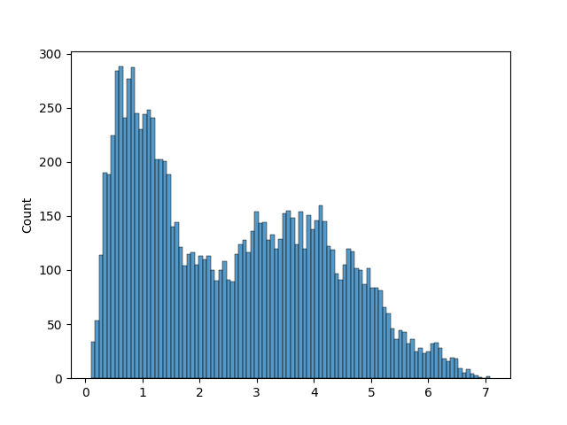
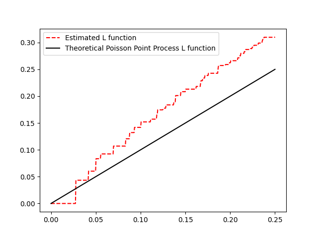

scludam.stat_tests module
Module for useful statistical tests.
The tests in this module can be used to determine if there is cluster structure (the data is “clusterable”) in a n dimensional numerical dataset.
- class scludam.stat_tests.TestResult(rejectH0: bool)[source]
Bases:
objectBase class to hold the results of a statistical test.
- Variables
rejectH0 (bool) – Whether the null hypothesis was rejected.
- class scludam.stat_tests.StatTest[source]
Bases:
objectBase class for statistical tests.
- abstract test(data: ndarray[Any, dtype[number]][ndarray[Any, dtype[number]]], *args, **kwargs) TestResult[source]
Perform the test.
- Parameters
data (Numeric2DArray) – numpy numeric 2d array with the data to be tested.
- Returns
Test result. Its fields depend on the specific test.
- Return type
- class scludam.stat_tests.HopkinsTestResult(rejectH0: bool, value: Number, pvalue: Number)[source]
Bases:
TestResultResults of a Hopkins test.
- Variables
rejectH0 (bool) – True if the null hypothesis is rejected.
pvalue (Number) – The p-value of the test.
value (Number) – The value of the Hopkins statistic.
- class scludam.stat_tests.HopkinsTest(n_samples: Optional[int] = None, metric: Union[str, DistanceMetric] = 'euclidean', n_iters: int = 100, threshold: Optional[Number] = None, pvalue_threshold: float = 0.05)[source]
Bases:
StatTestClass to perform a Hopkins spatial randomness test.
- Variables
n_iters (int, optional) – Number of iterations to perform the test. Final Hopkins statistic result is taken as the median of the results, by default is 100.
n_samples (int, optional) – Number of samples to take from the data, by default is
0.1*nwhere n is the number of points in the data set, as it is the recommended value.metric (Union[str, DistanceMetric], optional) – Metric to use for the distance between points, by default is ‘euclidean’. Can be str or sklearn.neighbors.DistanceMetric.
threshold (Number, optional) – Threshold to use with the Hopkins statistic value to define if H0 is rejected, by default is None. If set, it is used instead of the pvalue_threshold.
pvalue_threshold (float, optional) – Threshold to use with the p-value to define if H0 is rejected, by default is 0.05.
Notes
The test compares the distance between a sample of
mpointsX'from the data setXand their nearest neighbors inX, to the distances fromXto their nearest neighbors in a uniform distribution. The null hypothesis is:H0: The dataset X comes from a Poisson Point Process.
Which can be thought of as:
H0: The dataset X does not present cluster structure.
The formula to calculate the Hopkins statistic 1 is
h = sum(d1**l) / (sum(d1**l) + sum(d2**l)), where:d1: distance_to_nearest_neighbor_in_X
d2: distance_to_nearest_neighbor_in_uniform_distribution
l: dimensionality of the data
The Hopkins statistic is a number between 0.5 and 1. A value
~0.5supports the null hypothesis. A value~1.0supports the alternative hypothesis. To get the p-value, the statistic is compared to a beta distribution with parameters(m, m).References
- 1
Hopkins, B. and Skellam, J.G. (1954). A new method of determining the type of distribution of plant individuals”. Annals of Botany, 1954, 18(2), pp.213-227. https://doi.org/10.1093/oxfordjournals.aob.a083391
Examples
1from sklearn.datasets import load_iris 2 3from scludam import HopkinsTest 4 5iris = load_iris().data 6 7ht = HopkinsTest().test(data=iris) 8print(ht) 9# >> HopkinsTestResult(rejectH0=True, value=0.9741561806256851, pvalue=2.220446049250313e-16)
- class scludam.stat_tests.DipDistTestResult(rejectH0: bool, value: Number, pvalue: Number, dist: ndarray[Any, dtype[number]][ndarray[Any, dtype[number]]])[source]
Bases:
TestResultResults of a dip dist test.
- Variables
value (Number) – The value of the dip statistic.
pvalue (Number) – The pvalue of the test.
dist (Numeric1DArray) – The ordered distance array.
- class scludam.stat_tests.DipDistTest(n_samples: Optional[int] = None, metric: str = 'euclidean', pvalue_threshold: float = 0.05)[source]
Bases:
StatTestClass to perform a Dip-Dist test of multimodality over pairwise distances.
- Variables
n_samples (int, optional) – number of samples to take from the data, by default is set to the number of points in the data set. If n_samples is provided, then it is set to min(n, n_samples).
metric (Union[str, DistanceMetric], optional) – Metric to use for the distance between points, by default is ‘euclidean’. Can be str or sklearn.neighbors.DistanceMetric.
pvalue_threshold (float, optional) – Threshold to use with the p-value to define if H0 is rejected, by default is
0.05.
Notes
The test analyzes the pairwise distance distribution 2 between points in a data set to determine if said distribution is multimodal. The null hypothesis is:
H0: The distance distribution is unimodal.
Which can be thought of as:
H0: The data set X does not present cluster structure.
Hartigan’s Dip statistic 3 is the maximum difference between an empirical distribution and its closest unimodal distribution calculated using the greatest convex minorant and the least concave majorant of the bounded distribution function.
References
- 2
A. Adolfsson, M. Ackerman, N. C. Brownstein (2018). To Cluster, or Not to Cluster: An Analysis of Clusterability Methods . https://doi.org/10.48550/arXiv.1808.08317
- 3
J. A. Hartigan and P. M. Hartigan (1985). The Dip Test of Unimodality. Annals of Statistics 13, 70–84. DOI: 10.1214/aos/1176346577
Examples
1import matplotlib.pyplot as plt 2import seaborn as sns 3from sklearn.datasets import load_iris 4 5from scludam import DipDistTest 6 7iris = load_iris().data 8 9dd = DipDistTest().test(data=iris) 10print(dd) 11# >> DipDistTestResult(rejectH0=True, value=0.01415416887708115, pvalue=0.0, dist=array([0.1, ..., 7.08519583])) 12sns.histplot(dd.dist, bins=100) 13plt.show()
- class scludam.stat_tests.RipleyKTestResult(rejectH0: bool, value: Number, radii: ndarray[Any, dtype[number]][ndarray[Any, dtype[number]]], l_function: ndarray[Any, dtype[number]][ndarray[Any, dtype[number]]])[source]
Bases:
TestResultResults of a Ripley’s K test.
- Variables
rejectH0 (bool) – True if the null hypothesis is rejected.
value (Number) – The value calculated to determine if H0 is rejected. If the test
modeischiuorripley, then the value is the thesupremumstatistic. If the test mode isks, then the value is the pvalue of the Kolmogorov-Smirnov test.radii (Numeric1DArray) – The radii used in the test.
l_function (Numeric1DArray) – The L function values.
- class scludam.stat_tests.RipleysKTest(rk_estimator: Optional[RipleysKEstimator] = None, scaler: TransformerMixin = MinMaxScaler(), mode: str = 'ripley', radii: Optional[ndarray[Any, dtype[number]][ndarray[Any, dtype[number]]]] = None, factor: Optional[float] = None, pvalue_threshold: float = 0.05)[source]
Bases:
StatTestClass to perform the Ripleys K test of 2D spatial randomness.
- Variables
rk_estimator (astropy.stats.RipleysKEstimator, optional) – Estimator to use for the Ripleys K function 4, by default is None. Only used if a custom RipleysKEstimator configuration is needed.
mode (str, optional) –
The comparison method to use to determine the rejection of H0, by default is “ripley”. Allowed values are:
”ripley”: H0 rejected if
s > ripley_factor * sqrt(area) / nwherearea: is the area of the 2D data set taken as a square window.
n: is the number of points in the data set.
ripley_factor: are the tabulated values calculated by Ripleys 4 to determine p-value significance. Available Ripleys factors are
p-value = 0.05->factor = 1.42andp-value = 0.01->factor = 1.68.
”chiu”: H0 rejected if
s > chiu_factor * sqrt(area) / nwhere:chiu_factor: are the tabulated values suggested by Chiu 5 to determine p-value significance. Available Chiu factors are
p-value = 0.1 -> factor = 1.31,p-value = 0.05 -> factor = 1.45andp-value = 0.01 -> factor = 1.75.
”ks”: H0 rejected if
kolmogorov_smirnov_test_pvalue < pvalue_threshold, where kolmogorov_smirnov_test_pvalue is the p-value of the Kolmogorov Smirnov test comparing the estimated L function to the theoretical L function of a uniform distribution. This option is experimental and should be used with caution.
radii (Numeric1DArray, optional) –
numpy 1d numeric array containing the radii to use for the Ripleys K function, by default is None. If radii is None, radii are taken in a range
[0, max_radius], where max_radius is calculated as:recommended_radius = short_side_of_rectangular_window / 4recommended_radius_for_large_data_sets = sqrt(100 / pi * n)max_radius = min(recommended_radius, recommended_radius_for_large_data_sets)
The steps between the radii values are calculated as
step = max_radius / 128 / 4. This procedure is the recommended one in R spatstat package 6.
- Raises
ValueError – If tabulated factor for the chosen p-value threshold is not available, or if the chosen p-value threshold is invalid.
Notes
The test calculates the value of an estimate for the L function 7 (a form of Ripleys K function) for a set of radii taken from the center of the data set, and compares it to the theoretical L function of a uniform distribution. The null hypothesis is:
H0: The data set X comes from a Poisson Point Process.
Which can be thought of as:
H0: The data set X does not present cluster structure.
The Ripleys K(r) function is defined as the expected number of additional random points within a distance r of a typical random point. For a completely random point process (Poisson Point Process),
K(r) = pi*r^2. The L(r) function is a form of K(r) defined asL(r) = sqrt(K(r)/pi). The statistic to define if H0 is rejected based on the L function is thesupremumof the differences = max(L(r) - r).References
- 4(1,2)
B. D. Ripley (1979). Tests of Randomness for Spatial Point Patterns. J. R. Statist. Soc. B (1979), 41, No.3, pp. 368-374. https://doi.org/10.1111/j.2517-6161.1979.tb01091.x
- 5
S. N. Chiu (2007). Correction to Koen’s critical values in testing spatial randomness. Journal of Statistical Computation and Simulation 2007 77(11-12):1001-1004. DOI: 10.1080/10629360600989147
- 6
A. Baddeley, R. Turner (2005). Spatstat: An R Package for Analyzing Spatial Point Patterns. Journal of Statistical Software, 12(6), 1–42. DOI: 10.18637/jss.v012.i06.
- 7
J. Besag (1977). Contribution to the Discussion on Dr. Ripley’s Paper. Journals of the Royal Statistical Society, B39, 193-195.
Examples
1import matplotlib.pyplot as plt 2import seaborn as sns 3from sklearn.datasets import load_iris 4 5from scludam import RipleysKTest 6 7iris = load_iris().data 8 9rk = RipleysKTest().test(data=iris[:, 0:2]) 10print(rk) 11# >> RipleyKTestResult(rejectH0=True, value=0.07193140227503197, radii=array([0., ..., 0.25]), l_function=array([0., ..., 0.31045381])) 12sns.lineplot( 13 x=rk.radii, 14 y=rk.l_function, 15 linestyle="--", 16 color="red", 17 label="Estimated L function", 18) 19sns.lineplot( 20 x=rk.radii, 21 y=rk.radii, 22 color="k", 23 label="Theoretical Poisson Point Process L function", 24) 25plt.show()
- test(data: ndarray[Any, dtype[number]][ndarray[Any, dtype[number]]], *args, **kwargs)[source]
Perform the Ripleys K test of 2D spatial randomness.
- Parameters
data (Numeric2DArray) – numpy 2d numeric array containing the data set to test.
- Returns
Result of the Ripleys K test.
- Return type
RipleysKTestResult
- Warns
UserWarning – Warns if some dataset points are repeated (exactly equal). In that case, the RipleysKEstimator will not be able to calculate the L function, so repeated points will will be eliminated before the test. Bound to change when RipleysKEstimator implementation is changed.